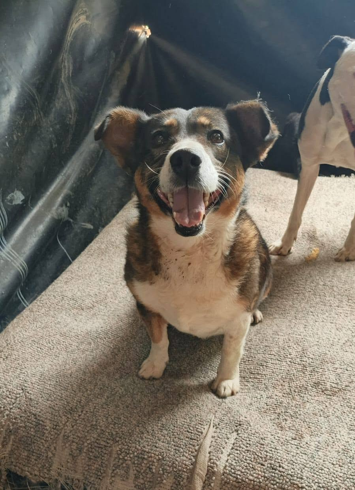
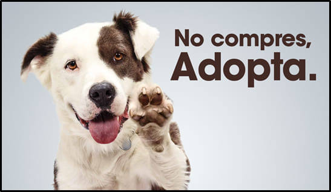
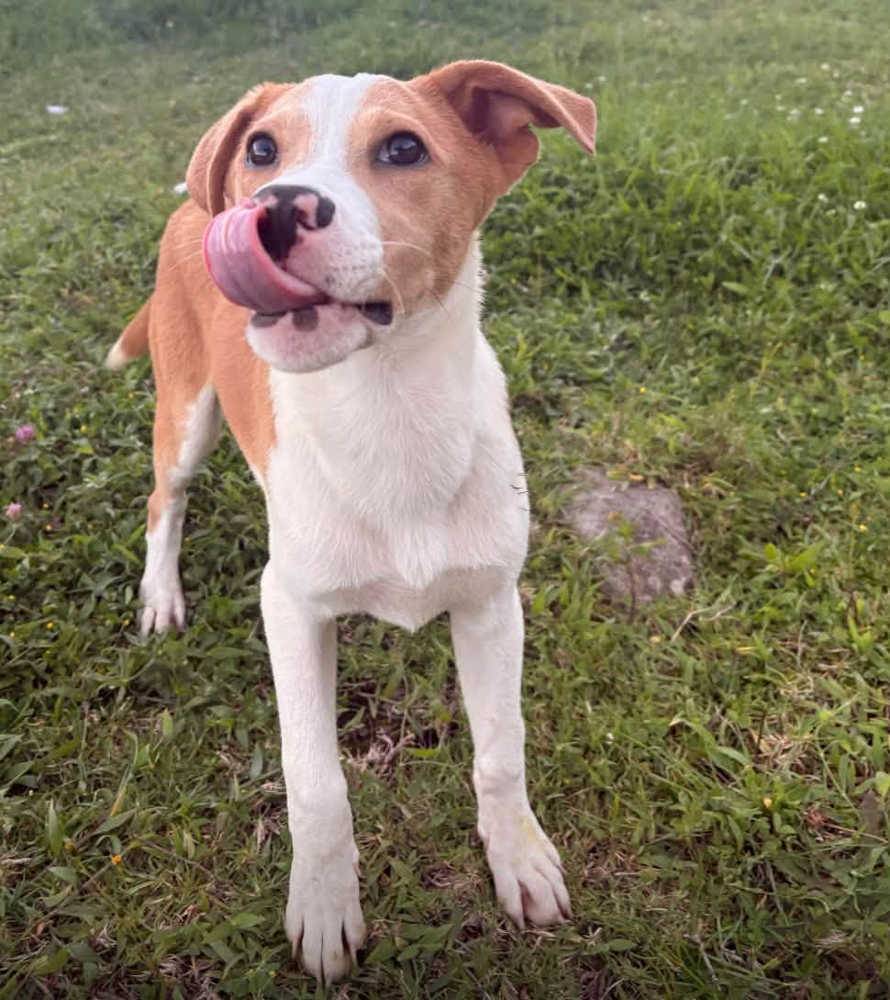
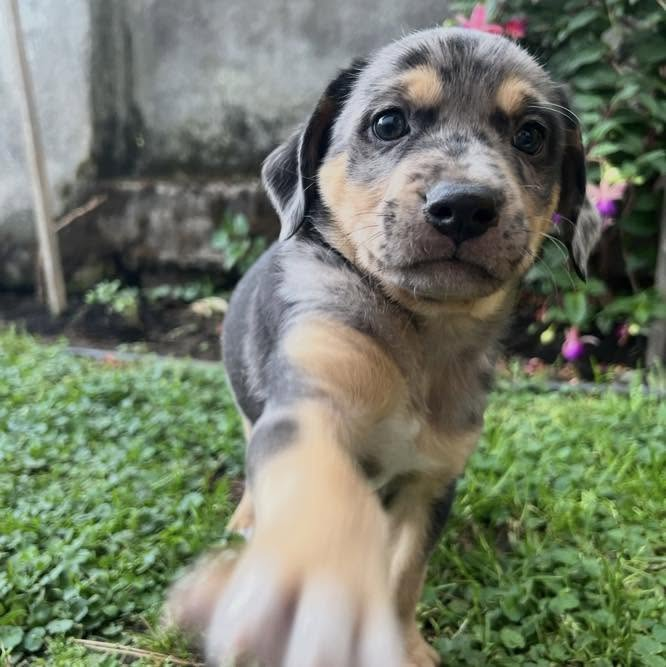
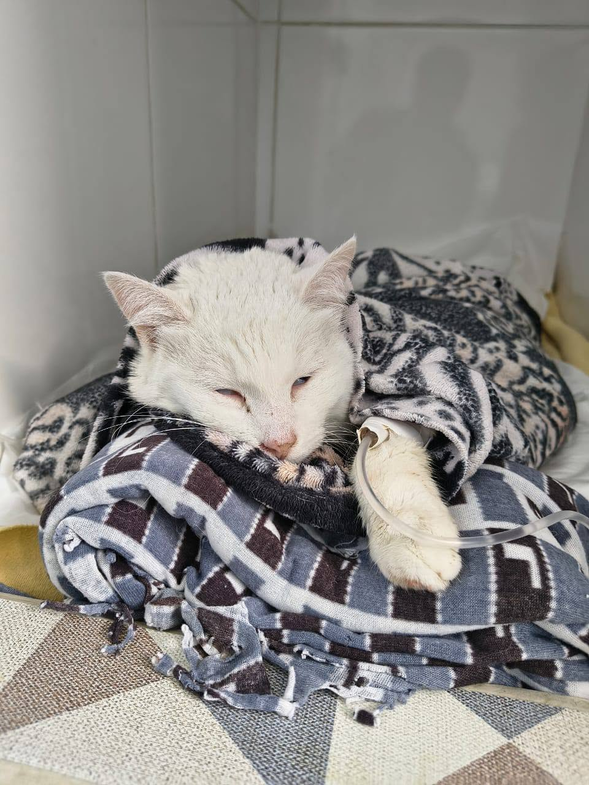

Rocky
Perro mestizo
- Edad: 2 años
- Tamaño: Mediano
- Carácter: Juguetón
Refugio de mascotas rescatadas en la ciudad de Quito y sus alrededores

En aDOGtame Quito rescatamos perros y gatos de las calles de la ciudad de Quito y sus
alderedores, con la finalidad de darles otra oportunidad a animalitos que fueron abandonados,
descartados por sus dueños o que no tuvieron la suerte de tener un hogar.
Todos nuestros animalitos están esterilizados, vacunados y esperan un hogar que les pueda brindar amor y cariño.

Perro mestizo

Gata mestiza

Cachorra mestiza

Gato blanco
📍 Dirección: Av. 12 de octubre y Vicente Ramón Roca, Quito
📞 Teléfono: 02 3946500 - ✉️ adopcionesuio@adogtame.org
| Día | Horario de visita |
|---|---|
| Lunes a Viernes | 09:00 - 15:00 |
| Sabados | 10:00 - 14:00 |
| Domingos | Cerrado |